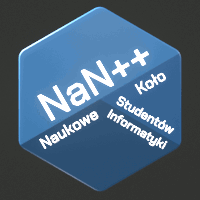

Koło Naukowe
NaN++
Dołącz
Opiekun
Projekty
Sieć neuronowa przyjmująca link do piosenki w serwisie YouTube, i zwracająca gatunek tej piosenki
Link do repozytorium
Projekt w trakcie realizacji
Sieć trenowana była dla 4 gatunków muzyki: metal, pop, k-pop, oraz rap.
Trenowanie sieci neuronowej odbywa się przy użyciu bibliotek Tensorflow, Keras oraz Sklearn.
Aplikacja jest napisana we Flasku.
Aby użyć aplikacji, należy z repozytorium pobrać folder `genres_front`, oraz będąc w folderze `src`, uruchomić plik `server.py`